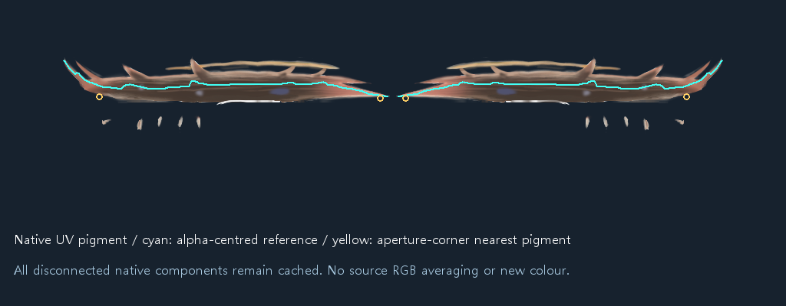
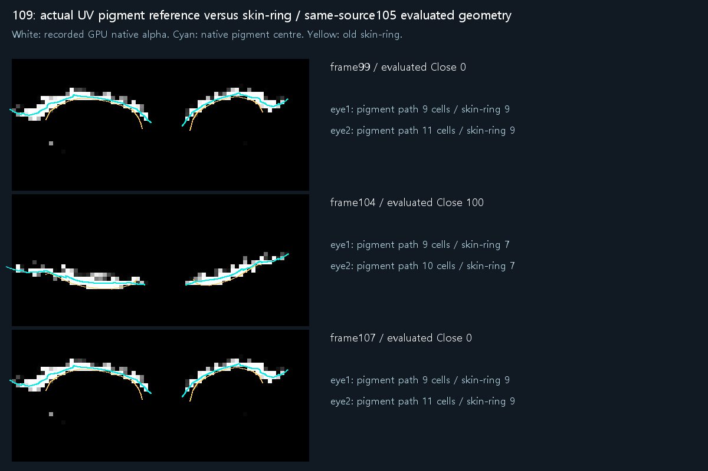
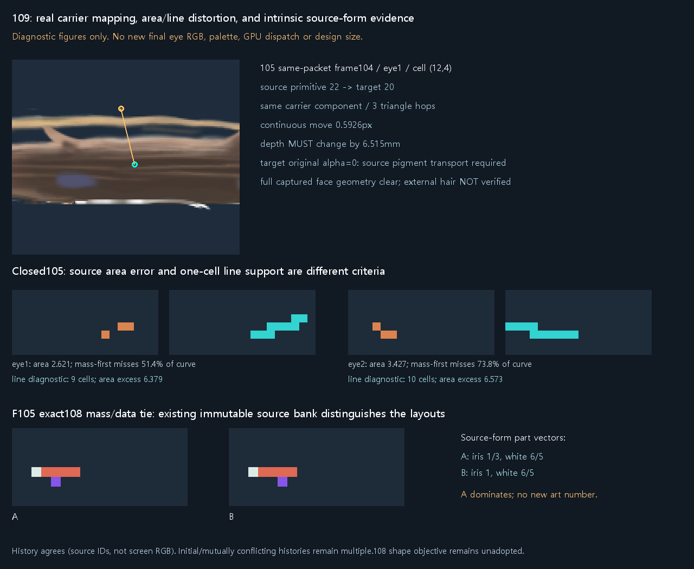

추가 Unity 호출·Play·GPU·제품 변경 0. 108의 미채택을 유지한다. 이번 산출물은 GPU 이전에 필요한 전제의 근거와 반례이며 최종 눈 렌더 개선·유한 팔레트·미관·시간 안정화 완료가 아니다. 원본 RGB를 평균하거나 새 색을 만들지 않았다.
기존 안검 곡선은 피부 submesh3의 눈 구멍 경계였다. 실제 색소는 별도 native material6/UV/mesh carrier에 있다. 이를 구분하지 않고 skin-ring을 색소 경로로 보호한 전제는 현재 원본에서 맞지 않는다. 기존 제품77과 사용자 파일은 바꾸지 않았다.

native109.create_cache/locate_uv/section_centres/cache_key: 원본 alpha가 양수인 UV texel을 실제 native6 삼각형에 연결했다. 33,774개 carrier texel,8연결24성분(4연결28), 서로 다른 carrier로 중복 매핑된 texel0이다. 작은 성분을 지우지 않고 모두 캐시했다. 기존 양 눈꼬리의 3D 대응이 같은 색소 성분을 가리키는 두 띠에만 기준 경로를 정의했다.
기준 경로는 native texel 단면의 alpha 질량 중심이다. RGB 평균이 아니며 작가 의도를 유일하게 복원한 skeleton도 아니다. 총848점이 실제 UV/삼각형/바리센트릭 좌표를 가지며, 사이4,312개 지점도 실제 carrier와 양수 source alpha 안에 있다. 원재질·UV·rest·topology·등록·정책으로 cache key를 만들며 현재 포즈는 키에 넣지 않는다. 현재 자료의 identity UV transform/BLEND/factor1은 검사한다. 임의 모델 자동 분류를 완료했다는 주장은 아니다.

geometry109.prepare_packet은 같은 packet의 전체 evaluated mesh·직접 저장 eyeInverse·head/view를 쓴다. source105의 열린 눈·완전 Close·재개방에서 skin-ring→새 색소 중심 경로 최대 거리는 약0.33~0.64px다. 다른 sourceId의 비슷한 포즈를 같은 프레임으로 섞지 않았다. 원본 색소 일부가 기존 authored-parent bounds+고정2 padding ROI 밖으로 나가는 입력 잘림도 확인했다(한쪽 main ribbon의 원본 UV texel26개/닫힘63개, 화면 면적 수치 아님). 새 경계는 실제 feature footprint로 잡아야 한다.
same-frame105에서 source 곡선이 지나는 셀 중심39곳을 조사했다. 37곳은 같은 연결 carrier에서 UV/바리센트릭/world/depth 대응을 계산할 수 있었다. 예: 완전Close frame104/eye1/(12,4), source primitive22→target20,3개 삼각형 연결, 이동0.5926px. 목표 지점은 원본 alpha0이므로 그 색을 읽는 방식이 아니라 원본 색소 ID와 목적지 carrier의 별도 운반이 필요하다. 원래 source 깊이를 복사하면6.515mm 틀린다. 목적지 깊이 방정식 잔차는1.78e−15였다. 이 수치는 GPU bit동일이나 최종 가시성 검증이 아니다.
나머지 두 셀 `(3,5)`/`(14,4)`의 중심은 다른 아래쪽 carrier만 만난다. 하지만 같은 셀 내부에는 올바른 안검 carrier의 source 기준점38개/74개가 존재한다. 따라서 이 셀도 “안검을 표현할 수 없다”는 결론이 아니다. footprint109.clip으로 원래 carrier 삼각형을 픽셀 사각형에 자르면8개/17개 실제 표면 조각과 UV·바리센트릭·깊이 장을 얻는다. 한 점의 앞선 깊이를 셀 전체 소유권으로 확대하지 않는다. 여러 조각의 면적 합은 depth-resolved union coverage가 아니다.

105 닫힌 눈의 관측 질량은2.621/3.427셀이다. 108의 질량 우선3+3셀은 새 원본 색소 경로 길이의51.4%/73.8%를 표현하지 못한다. 반대로 source 경로를 한 셀 폭으로 표현하는 진단은 ROI 안9/10셀로 면적이6.379/6.573셀 더 커진다. 한쪽은 ROI 밖 경로가 약3.9% 잘린다. 어느 수치를 고정 목표로 채택하지 않았다. 질량 오차·선의 연결/최소 표현 두께·원형 이탈은 별도 기준이어야 하며, 두 안 중 어느 것도 이번에 미술 성공으로 채택하지 않았다.
history109.canonical_rank/part_scores/pareto_indices: 107 F105의 두 동등해는 기존 immutable source bank의 ID별 보존 비용을 더하면 구분된다. 홍채 비용은 A=1/3, B=1이고 흰자는6/5로 동일하다. A가 성분별로 우세하므로 새 미술 숫자나 부위 간 가중합 없이 결정할 수 있다. 이것은 source ID 분포의 개선이지 원형의 모든 상대배치를 증명한 것은 아니다.
history109.rank는 대응된 이전 source-key 분포도 별도로 검사한다. F103→F105와 Close를 사이에 둔 F105→F109에서 같은 A를 선호한다. 프레임 간격2/4가 있어 연속 프레임 결과라고 부르지 않는다. 현재 가시성이 먼저 적용돼 완전Close F107의 iris/white key0을 history가 되살리지 않는다. 원형 source cache20셀은 불변이며 이전 raster를 canonical로 승격하지 않는다. 비교 불가능한 part 비용, 처음부터 여러 해, 서로 충돌하는 이전 이력은 다중해로 남긴다. RGB 시간평균·화면 위치 고정은 없다.
별도 실제87의 보행·sweep·blink23입력(인접쌍21)에서도 같은848개 source UV/삼각형 ID를 current evaluated mesh에 연결했다. 19,504개 대응을 원본 mesh에서 재검산했다. 실제Close0→50→100→100→0 변형을 그대로 따라간다. 현재 final cell 배치나 최종 RGB의 시간 안정성 검증은 아니다. 서로 다른87/105/107 sourceId를 섞지 않았다.
현재 새 디자인 입력이나 추가 캡처가 반드시 필요하다고 판정하지 않았다. 다음 CPU 공동 후보는 올바른 source ribbon·carrier footprint·원형 비용을 사용하고 가림 우선 조건을 유지해야 한다. 그 후보 검증 전 GPU를 덧붙이지 않았다. Argon에게 직접 연락하지 않았으며 기존 docs/ai/PIXEL_ALBEDO_20261030.md에 핵심 질문과 함수 위치만 연결했다.
재검산: python -B check109.py (기존 NumPy/Pillow). 원본 RAW109.zip4.12MB,58파일과 정적7입력, sibling107/108의 커밋 자료로 동등해까지 재검산한다. 검사 결과 · 함수/행 · source cache · 왜곡/geometry · 중심 부재 반례 · 원형/history · 실제 표면 대응 · 미일치 보존.